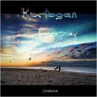

Home Artist links Label link

Karfagen - Continium
| Artist: | Karfagen |
| Title: | Continium |
| Label: | Unicorn UNCR-5030 |
| Length(s): | 41 minutes |
| Year(s) of release: | 2006 |
| Month of review: | [07/2008] |
Line up
Antony Kalugin - vocals, sampled percussions & keyboards
Oleg Polyansky - keyboards, piano & organ
Sergei Kovalev - accordion on 3,10
Kostya Shepelenko - drums
Roman Druid - bass
Roman Jilonenko - guitars
Georgiy Kafunin - flutes, wheel lira & effects
Oleg Koralaev - nylon guitar
Marso - vocals on 3, 10
Timorphy - vocals on 6
Tracks
| 1) | A Winter Tale - Part 1 | 4.27
|
| 2) | A Winter Tale - Part 2 | 5.34
|
| 3) | Silent Anger | 4.50
|
| 4) | Old Legends | 4.23
|
| 5) | All The Time I Think About You | 3.05
|
| 6) | Amused Fair | 8.14
|
| 7) | Stone Talk | 2.04
|
| 8) | Marvelous Dance | 3.32
|
| 9) | Muse | 2.39
|
| 10) | Close To Heaven - Bonustrack | 2.43
|
Summary
The music
Even though the list of musicians for this album is quite extensive, I would call Karfagen mostly Antony Kalugin's band, group, act, whatever word one might like to use for it. His compositions are the basis for the tracks, whilst his keyboards form the basis for their sound. Despite the presence of multiple vocalists, the music is almost solely instrumental, the vocals often playing in the background. In fact, Close To Heaven is the only track with lyrical vocals. Some sort of guitar is audible regularly, too, which might be the nylon guitar. Don't know that one. The piano at times creates a semi classical feel, but more Richard Claydermann than Keith Jarrett. Maybe at times even a Suzanne Ciani or Yanni.
The changes in style on this album make it hard to peg down on the one hand, whilst remaining within the same sort of musical vocabulary at the same time. This is probably caused by the fact that the music makes a commitment to no style in particular, therefore just passing by most of the time without giving the listener the feel of wanting to hop on. The flow makes shards of neo classical, soft jazzy, EM, neo prog, to the festive sort of jazz made in the eighties by a Koinonia or Shakatak run past us. But none of it tacks on, none of it matters in itself, has the sort identity to stand up for itself. It remains a series of meaningless encounters in a mist of electronic instruments. Never mind the use of several acoustic or electrical instruments, the sound remains electronic. When we reach the final track, not above the status of bonus, it's all far too little too late to save the day. Especially since this too lacks sincerity, being built from cliches.
Conclusion
Overall I find this album to be a rather smooth, to the point of sweet, affair. Despite the changes in style, the album's sound is beyond consistent, the tracks lacking identity and inviduality. This is caused on the one hand by the rather one sided instrumentation, and by the lack of any striking qualities on the part of the compositions on the other hand. The later Yanni material has the same sort of sweetness, without being completely alike. Those into sweet stuff might like this offering, those into more spunk should definitely pass on it.
© Roberto Lambooy